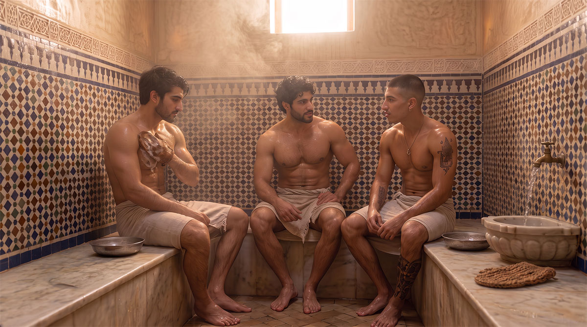
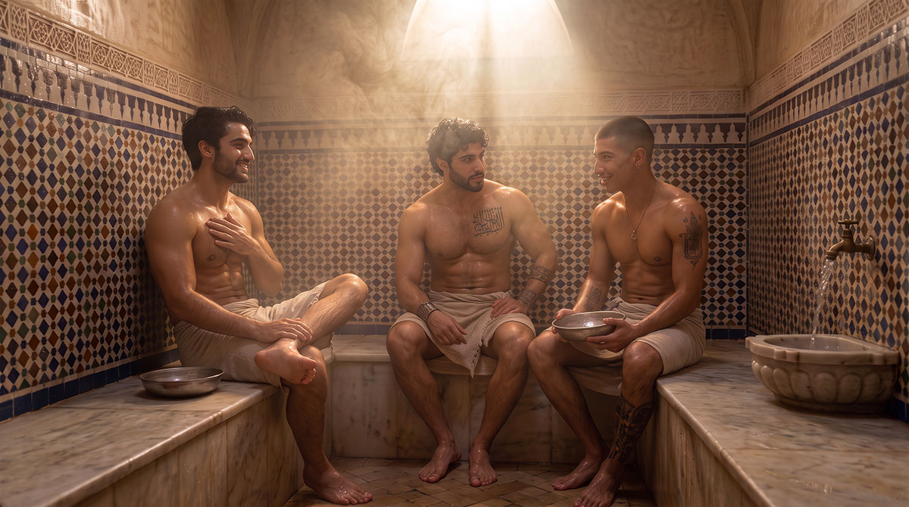
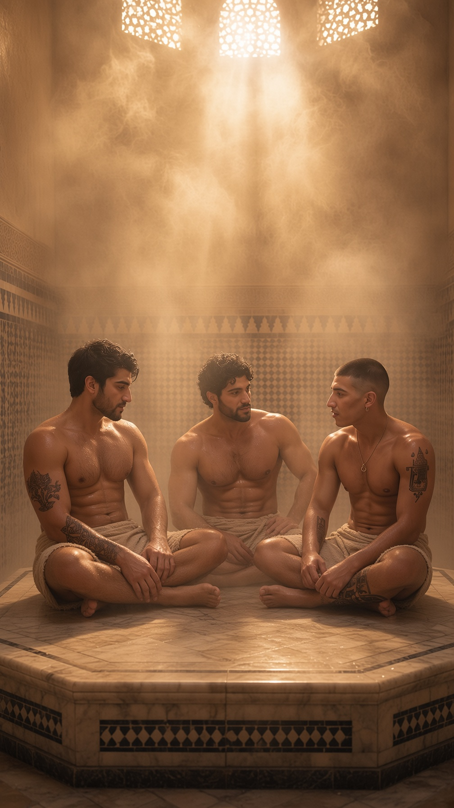
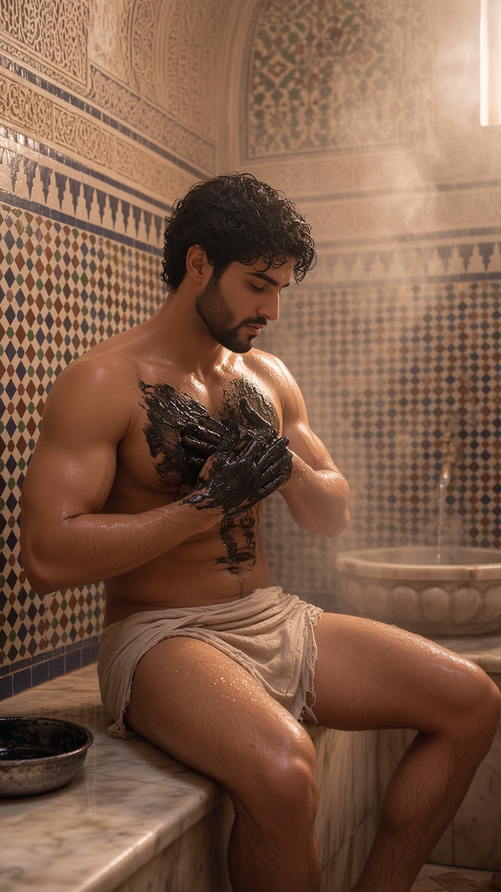
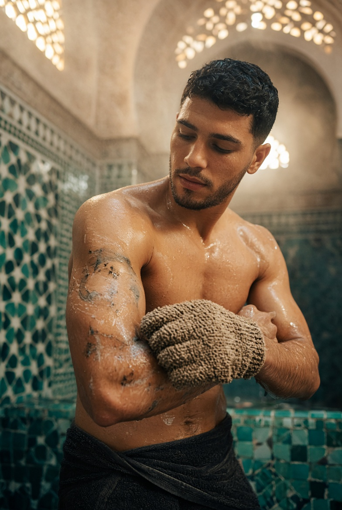
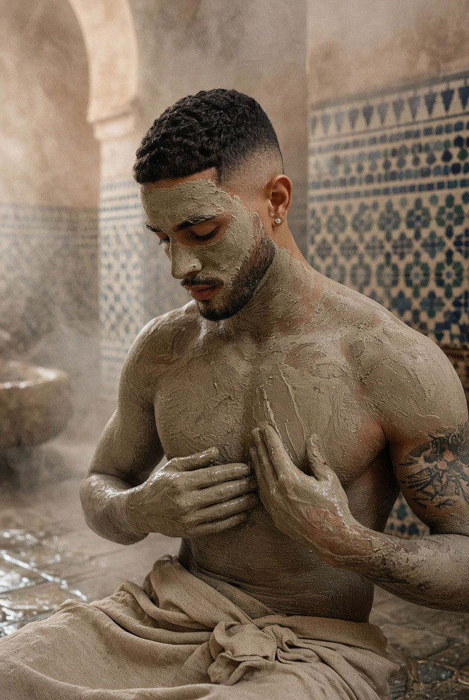

Hammam
Purification, chaleur, repos — un héritage qui traverse la Méditerranée avant d'atteindre le Maghreb, et qui reste, au Riad, un lieu de la maison au même titre que l'atelier ou la salle de prière.

Une histoire méditerranéenne
Le hammam n'est pas né dans le monde islamique : il en hérite. Ses racines plongent dans les thermes romains et byzantins, que le monde musulman naissant adopte et transforme dès le VIIIe siècle. En al-Andalus, dès la fin de cette même époque, le bain apparaît dans les résidences et les palais avant de se diffuser dans les villes et les campagnes — porté par les géographes qui le décrivent, les juristes qui en réglementent l'usage, et les médecins qui en vantent les vertus.
مُتَفَرِّجُ الأَبْوابِ عَن صَحْنٍ ثَوى فيهِ الصَّباحُ وَشَرَّدَ الأَظلامُ
« Ses portes s'ouvrent largement sur une cour où le matin s'est établi et d'où l'ombre a été mise en déroute. »
— Ibn Darrāj al-Qasṭallī, poète andalou (Xe–XIe s.), Waṣf al-ḥammām

Les salles : un parcours, pas une pièce unique
Le hammam traditionnel n'est pas une salle unique mais un parcours en plusieurs pièces de température croissante, puis décroissante — un principe que l'on retrouve, avec des noms parfois différents, de l'Andalousie au Maghreb.
| Salle | Nom arabe | Fonction |
|---|---|---|
| Vestiaire | al-maslakh | On s'y dévêt avant d'entrer dans le parcours. |
| Salle froide | al-bayt al-barīd | Le corps s'y acclimate à l'entrée ; on y revient ensuite se reposer longuement, autour d'un thé, une fois le bain terminé. |
| Salle tiède | al-bayt al-wastānī | Le cœur du hammam : la plus grande, celle où l'on passe le plus de temps, entre vapeur légère, massage et parfums. |
| Salle chaude | al-bayt al-sukhūn | La plus intense : la chaleur y ouvre les pores et prépare la peau au savon noir, puis au gant kessa. |
| Chaufferie | bayt al-nār | Invisible aux baigneurs, derrière la salle chaude : elle alimente tout le système en chaleur. |
Dans la salle chaude, la vapeur est le plus souvent parfumée à l'huile essentielle d'eucalyptus — parfois associée à la menthe — diffusée pour dégager les voies respiratoires ; l'huile d'argan et l'huile d'olive, elles, restent réservées au soin de la peau, non à la vapeur.
Le parcours n'est pas linéaire : on revient, à la fin, se reposer dans la salle froide — le hammam n'était jamais une étape rapide, mais une occasion sociale qui pouvait durer des heures.
À Fès même, le Hammam al-Mokhfiya — daté du milieu du XIVe siècle, sous le règne du sultan mérinide Abū ʿInān, orné de stuc sculpté et de zellige, et rattaché au habous de la mosquée Qarawiyyin — témoigne de cette même organisation spatiale, à quelques pas de ce que sera un jour le Riad.

Le göbek taşı — la pierre chauffée
Au centre de la salle chaude, certains hammams disposent d'une large plate-forme de marbre chauffée par-dessous — le göbek taşı (« pierre du nombril »), sur laquelle le corps s'allonge pour suer et recevoir le gommage. L'élément appartient d'abord à la tradition ottomane du hammam, distincte de la tradition maghrébine et andalouse dans laquelle s'inscrit le Riad — mais on le retrouve aujourd'hui, par mélange des usages, dans nombre de hammams marocains contemporains, notamment à Marrakech et à Fès.
Au Riad, le choix reste fidèle à la logique maghrébine d'origine : plusieurs salles de température croissante plutôt qu'une seule pierre centrale — mais le göbek taşı, là où il existe, répond au même principe que tout le reste du hammam : la chaleur qui prépare le corps avant tout autre geste.

Le rituel : trois gestes, un ordre ancien
Le savon noir (sabun beldi)
Pâte sombre à l'huile d'olive, parfois enrichie d'olives concassées, historiquement liée à des centres de production comme Essaouira. Appliqué sur peau chaude et humide, on le laisse poser plusieurs minutes : c'est lui qui ramollit en profondeur ce que le gant viendra ensuite retirer.
Le gant kessa
Tissé, volontairement rugueux, il exfolie par mouvements circulaires fermes mais mesurés. Ce n'est pas un geste de violence contre la peau : c'est un geste de patience — le même esprit que celui du potier ou du tanneur, appliqué au corps plutôt qu'à la matière.


Le ghassoul (ou rhassoul)
Argile minérale extraite dans les montagnes de l'Atlas, appliquée en masque sur le corps et le visage : elle absorbe, resserre, purifie — sans agresser la peau, à la différence des savons industriels.
Le rituel se referme souvent par quelques gouttes d'huile d'argan, pour sceller ce que la vapeur et l'argile ont ouvert.
Excursus — le massage, un geste et non un soin de spa
Le massage du hammam n'est pas un massage de bien-être au sens occidental — une parenthèse silencieuse dans une pièce à part. C'est un geste intégré au bain lui-même, pratiqué sur peau mouillée, souvent dans la salle chaude ou juste après, à la suite du savon noir et du gant kessa.
Qui le pratique. Dans le hammam traditionnel maghrébin, l'homme qui l'exerce se nomme le tayeb — pendant féminin, la tayyaba, pour les hammams de femmes. Les deux mondes restent strictement séparés, par des horaires ou des salles distinctes, comme le veut la tradition. Le tayeb n'est pas un masseur de spa formé à une école : c'est un métier transmis à l'intérieur du hammam lui-même, par la pratique répétée — la même logique de transmission que celle des ateliers de Dar al-Hiraf, appliquée ici au corps plutôt qu'à la matière.
Le geste. Le massage traditionnel repose sur un pétrissage profond des muscles, des étirements et des pressions ciblées le long du dos, des épaules et des membres — un geste ferme, presque abrupt pour qui n'y est pas habitué, pensé pour dénouer les tensions du travail quotidien plutôt que pour la seule détente. Ce n'est pas une caresse : c'est un travail du corps, avec la même exigence de précision que le geste de l'artisan.
Les huiles. L'huile d'argan pure reste, de loin, la plus utilisée pour ce massage final — appliquée sur peau propre et encore humide, une fois le gommage terminé et la peau rincée. L'huile d'olive, parfois, complète ou remplace l'argan selon les régions et les maisons. Aucune des deux n'est choisie au hasard : ce sont les mêmes huiles que celles du savon noir et de l'artisanat du Riad — la continuité entre ce que la terre donne et ce que le corps reçoit.
Cet héritage n'est pas propre au monde islamique : les thermes romains et byzantins pratiquaient déjà la tractatio, le massage à l'huile après le bain — un geste que le hammam a hérité et transmis à sa manière, jusqu'à aujourd'hui.
Un développement intégral de la personne
Au Riad, le hammam ne reste pas isolé : il s'inscrit dans le même souci que la sauna et la salle de sport qui l'accompagnent — non comme gadgets de bien-être importés, mais comme trois volets d'un même soin du corps, cohérent avec ce que Dar al-Hiraf enseigne ailleurs sur la discipline physique.
On connaît en arabe moderne l'expression العقل السليم في الجسم السليم (« un esprit sain dans un corps sain ») — mais il faut le dire honnêtement : ce n'est pas un adage arabe d'origine. C'est la traduction d'une formule latine, elle-même tirée d'un vers plus long :
Orandum est ut sit mens sana in corpore sano.
« Il faut prier pour avoir un esprit sain dans un corps sain. »
— Juvénal, Satires, X, v. 356 (Ier–IIe siècle apr. J.-C.)
Dans son contexte d'origine, ce vers n'est pas un éloge isolé de la santé physique : c'est le premier d'une liste de choses réellement dignes d'être demandées aux dieux, par un poète qui venait de railler ceux qui prient pour la richesse, le pouvoir ou la beauté. Une prière pour la mesure, non un slogan sportif.
La tradition islamique a sa propre parole, plus ancienne et plus exigeante :
الْمُؤْمِنُ الْقَوِيُّ خَيْرٌ وَأَحَبُّ إِلَى اللَّهِ مِنَ الْمُؤْمِنِ الضَّعِيفِ، وَفِي كُلٍّ خَيْرٌ
« Le croyant fort est meilleur et plus aimé de Dieu que le croyant faible — bien qu'il y ait du bien en chacun. »
Tradition prophétique — Ṣaḥīḥ Muslim, n° 2664
Les commentateurs classiques y voient d'abord la force de la foi et de la détermination spirituelle — mais la lecture s'est toujours étendue, dans la tradition, à la force du corps et de l'action. Ce n'est pas un hasard si Dar al-Hiraf forme ensemble le geste, la prière et le corps : les trois relèvent de la même exigence.